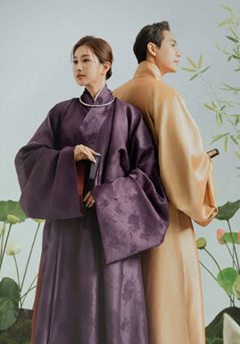
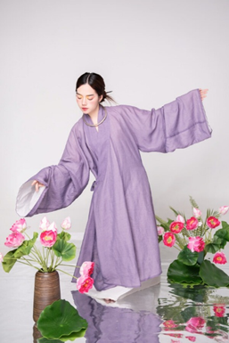

Mẫu 1
Áo dài truyền thống
Tà áo dài truyền thống gắn liền với biểu tượng tâm hồn Việt Nam: kín đáo mà gợi cảm, mộc mạc mà sang quý. Tà áo còn tượng trưng cho công - dung - ngôn - hạnh, toát lên phong thái đài các, dịu dàng nhưng đầy tự tin.
Chi tiết kỹ thuật may đo & thiết kế
- Cổ áo: Cổ đứng (cổ trụ/cổ tàu) cao 3 – 5 cm, ôm khít quanh cổ, tạo vẻ trang nghiêm và thanh thoát.
- Tay áo: Tay áo dài may theo kiểu raglan chạy chéo từ cổ xuống nách, giúp cử động thoải mái và không nhăn nách áo.
- Tà áo: Hai tà trước và sau thẳng tắp, dài thướt tha ngang gót chân, xẻ tà chuẩn xác ngay đường eo.
- Quần: Quần lụa ống suông rộng, chạm đất, thường bằng lụa màu trắng, đen hoặc cùng tông màu áo.
- Chất liệu: Lụa tơ tằm Hà Đông / Vạn Phúc, Lụa tơ sen tự nhiên, Vải sa lụa truyền thống, Gấm tơ dệt hoa ẩn.